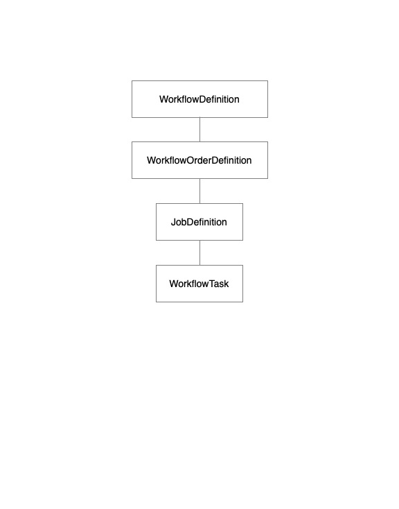

OLIVE Workflow API
Introduction
The OLIVE Workflow API extends the OLIVE Enterprise API to simplify working with an OLIVE server, allowing clients to request multiple OLIVE tasks with one API call. This eliminates the more verbose and complex calls necessary when using the Enterprise API. In particular, this framework will encapsulate 'feeding' functionality, to link together tasks, like speech activity detection and a plugin that uses speech regions or frames in its processing, or to 'bundle' multiple requests in a single call, rather than having every API call to a plugin be a separate action. The Workflow API is based around binary or text "Workflow Definition" files that SRI distributes to clients. These files contain a 'recipe' to be executed on an OLIVE server to perform analysis, enrollment, and eventually adaption using one or more audio files/inputs. This places the work of specifying how to execute a complex task to execute within the OLIVE server, instead of the client.
To use this API, a client submits the SRI provided Workflow Definition file to an OLIVE server. The server verifies it can run the Workflow Definition through a process called "actualization". If successful, an activated Workflow is returned to the client. This activated Workflow is then ready for one or more analysis (or enrollment) requests. These requests can be made numerous times with one or more audio submissions.
OLIVE still supports the original OLIVE Enterprise API that was based on creating and sending Google Protocol Buffers (Protobuf) message for each request, so if desired, clients can combine classic OLIVE API calls with the Workflow API to implement advanced functionality.
For advanced users, see Creating a Workflow Definition for information on composing your own Workflow Definition files.
For more information about working with OLIVE, please see:
Useful Concepts to Know
- Workflow Definition - distributed as a file (text or binary) with these characteristics:
- Similar to Plugins, Workflows are independent of the OLIVE software and can be updated and/or distributed outside of an OLIVE software release.
- Can be submitted to multiple OLIVE servers for actualization in parallel, where actualization is the process of verifying that the server can perform the activities defined in a Workflow Definition.
- Each actualized Workflow is considered unique to the server where it was actualized, as it is possible the plugin/domain names could vary by each server that actualizes the same WorkflowDefinition
- Most Workflow Definitions are implemented with the specific names of plugins/domains delivered with the OLIVE system. Changing the name of a plugin or domain will cause workflows that use them to cease to function.
- Order: a set one or more jobs. There are 3 supported Workflow orders: analysis, enrollment, and unenrollment. Analysis orders require at least one data (audio) input, enrollment orders require one or more data (audio) inputs, plus a class ID, unenrollment inputs do not accept data, only a class ID.
- Job: A set of tasks, plus depending on the order (analysis, enrollment, unenrollment) may include audio (data) and/or as class ID.
- An analysis order typically only includes one job, with that job accepting one audio input.
- An enrollment order may have multiple jobs, where each jobs has it's own set of tasks, one or more data/audio(s), and a class id (i.e. speaker name). Only tasks that support the Class Enroller trait such as speaker enrollment for SID and language enrollment for LID can be part of an enrollment job. Each enrollment job should support enrollment for a single class enroller. This allows enrollments (such as for LID and SID) to be handled separately, since it is very unlikely the same audio and class id (speaker name/language name) would be used for both tasks.
- Unenrollment jobs are similar to enrollment jobs, except that do NOT consume audio/data. They only accept a class ID
- Tasks: at the lowest level, a Workflow is composed of one or more tasks, such as SAD, LID, SID, QBE, ASR, etc. A task typically maps to a traditional plugin/domain, but as we expand the capabilities of the Workflow API, 'tasks' are likely to include functionality that is not implemented by a traditional OLIVE plugin, but by private, helper, components that assist other tasks in the workflow but do not return values to the user.
Limitations
The Workflow API is a new OLIVE extension whose interfaces are subject to change. This release covers two types of behavior:
- bundling of disparate tasks together into a single call and
- restricted feeding processes, wherein the output of one plugin may be fed into one or more other "downstream" plugins that will use this information in their processing. The most common example in this is SAD feeding other processes. The plugins that receive output from other plugins in a workflow must have an interface that accepts this input. I.e. to use SAD output the plugin must be designed to accept SAD input in addition to the usual audio inputs. Current workflows only allow for categorical feeding (e.g. SAD output always goes to SID input) but not conditional feeding behavior (audio goes to the ASR English domain if LID detects file is English).
The most common example in this is SAD feeding other processes. The plugins that receive output from other plugins in a workflow must have an interface that accepts this input. I.e. to use SAD output the downstream plugin(s) must be designed to accept SAD input in addition to the usual audio inputs. Current workflows only allow for categorical feeding (e.g. SAD output always goes to SID input) but not conditional feeding behavior (audio goes to the ASR English domain if LID detects file is English).
Further, the current implementation of workflows does not support tasks that create entirely new domains, like adaptation. This is much easier to accomplish with a direct call to the plugin, as bundling and feeding behavior is not relevant to this activity.
Creating a Workflow Definition
Internally, the OLIVE design uses a simple kitchen metaphor, which is expressed in the elements that compose an OLIVE workflow. If one thinks of OLIVE as a kitchen, orders are submitted to OLIVE, which are then extracted into jobs that are cooked/executed (as tasks). In this analogy, when authoring OLIVE workflows you are authoring both a menu and a recipe. Clients use the Workflow to request an order (analysis, enrollment, unenrollment), while the Workflow also includes the recipe to cook/execute those orders.
The "job" portion of a Workflow is used to build a simple directed acyclic graph (DAG) within OLIVE. This DAG, which OLIVE refers to as a "Job Graph", allows data to be shared by multiple tasks, while also allowing connections between these tasks. When connected, the outputs of upstream tasks (tasks that have been executed) and provided to downstream tasks (tasks that have not yet been executed). For example the output of a SAD task can be supplied to one or more downstream tasks such as LID or SID, so those tasks do not have to internally run SAD.
To enable this complexity, the workflow recipe defines a set of elements/objects:
- WorkflowDefinition - The outer container for all orders and their jobs (Job Graphs)
- WorkflowOrderDefinition - Used to group jobs into processing pipelines for analysis, enrollment, or unenrollment activities
- JobDefinition - Defines the set of tasks that are executed in a DAG and how task output is shared/returned. To simplify authoring, tasks in a job are executed sequentially.
- WorkflowTask - The task that is executed, which is usually implemented by a plugin

A quick note on the structure of elements: The WorkflowDefinition, WorkflowOrderDefinition, JobDefinition, and WorkflowTask are all based on a Protobuf message of the same name in the Enterprise API. Should you have questions about these elements it maybe be helpful to refer to these protobuf messages; however, the relationship between these messages/elements is not clear when looking at the Enterprise API messages, so the tables below include a "cardinality" column to make it clearer about the relationship between these elements.
WorkflowDefinition
At the top-level, the Workflow Definition element includes these required and optional fields:
| Attribute | Type | Cardinality | Description |
|---|---|---|---|
| order | WorkflowOrderDefinition | 1 to 3 | See WorkflowOrderDefinition below. There must be one or more of these elements |
| actualized | boolean | 1 | Always set to 'false' when creating a new Workflow. This is an internal field set by the OLIVE server when actualized |
| version | string | 0 or 1 | An optional user defined version number for this workflow |
| description | string | 0 or 1 | An optional description of this workflow |
| created | DateTime | 0 or 1 | An optional date this workflow was created |
| updated | DateTime | 0 or 1 | An optional date this workflow was updated |
An example Workflow Definition element (the WorkflowOrderDefinition element(s) within order defined later to avoid confusion )
{
"order": [],
"actualized": false,
"version": "1.0",
"description": "Example of a Workflow Definition Object",
"created": {
"year": 2021,
"month": 6,
"day": 29,
"hour": 8,
"min": 0,
"sec": 0
}
}
WorkflowOrderDefinition
Within a WorkflowDefinition element there can be 1 to 3 WorkflowOrderDefinition elements defined (one for analysis, one for enrollment, and one for unenrollment). The WorkflowOrderDefinition includes these required and optional fields:
| Attribute | Type | Cardinality | Description |
|---|---|---|---|
| workflow_type | WorkflowType | 1 | One of: 'WORKFLOW_ANALYSIS_TYPE', 'WORKFLOW_ENROLLMENT_TYPE', or 'WORKFLOW_UNENROLLMENT_TYPE' |
| job_definition | JobDefinition | 1 or more | See JobDefinition element below. An order must have at least one job |
| order_name | JobDefinition | 1 or more | See JobDefinition element below. An order must have at least one job |
Below is an example of a WorkflowOrderDefinition (JobDefinition element(s) defined later). 1 to 3 of these elements can be added to a WorkflowDefintion:
{
"workflow_type": "WORKFLOW_ANALYSIS_TYPE",
"job_definition": [],
"order_name": "Analysis Order"
}
JobDefinition
One or more JobDefinition elements must be added to WorkflowOrderDefinition element (see above). This element includes these required and optional fields:
| Attribute | Type | Cardinality | Description |
|---|---|---|---|
| job_name | string | 1 | A unique name for this job |
| tasks | WorkflowTask | 1 or more | See the WorkflowTask below. There must be at least one task defined for a Job. Assume tasks are executed in the order they are defined in this list. |
| data_properties | DataHandlerProperty | 1 | See DataHandlerProperty below. This defines the data (normally audio) properties for all tasks in this job |
| description | string | 0 or 1 | An optional description |
| processing_type | WorkflowJobType | 1 | Optional, do not specify unless creating a conditional workflow. The default value is "MERGE", with allowable values: "MERGE", "PARALLEL", or "SEQUENTIAL". See section on conditional workflows |
| conditional_job_output | boolean | 0 or 1 | Optional, do not specify unless creating a conditional workflow. See section on conditional workflows |
| dynamic_job_name | string | 0 or 1 | Optional, do not specify unless creating a conditional workflow. See section on conditional workflows |
| resolved | bool | 0 or 1 | DO NOT SET. This value is assgiend by the server |
| transfer_result_labels | string | 1 | Optional, do not specify unless creating a conditional workflow. See section on conditional workflows |
Here is an example of JobDefinition element (the WorkflowTask and DataHandlerProperty elements are defined below). One or more of these elements must be added to a WorkflowOrderDefinition.
[
{
"job_name": "SAD, LID, SID analysis with LID and SID enrollment",
"tasks": [],
"data_properties": {}
}
]
WorkflowTask
One or more WorkflowTask elements must be defined for a JobDefinition element (see above). This element includes these required and optional fields:
| Attribute | Type | Cardinality | Description |
|---|---|---|---|
| message_type | MessageType | 1 | The type of the task. One of: "REGION_SCORER_REQUEST", "GLOBAL_SCORER_REQUEST", "FRAME_SCORER_REQUEST", "AUDIO_ALIGN_REQUEST", "CLASS_MODIFICATION_REQUEST", "CLASS_REMOVAL_REQUEST", or "PLUGIN_2_PLUGIN_REQUEST" |
| message_data | varies | 1 | This element contains values based on the message type. For non-enrollment requests this is a dictionary that contains the keys 'plugin', and 'domain' For enrollment tasks, the dictionary also includes "class id": "None" |
| trait_output | TraitType | 1 | Classifies the type of output produced by this task. Must be one of: "GLOBAL_SCORER", 'REGION_SCORER', 'FRAME_SCORER', "CLASS_MODIFIER", "PLUGIN_2_PLUGIN", "AUDIO_ALIGNMENT_SCORER" |
| task | string | 1 | A label used to define the task type. By convention of one: "SAD", "LID", "SID", "LDD", "SDD", "QBE", "ASR", etc; however, one can define your own type name. For example if you prefere "STT" to "ASR" |
| consumer_data_label | string | 1 | This task consumes data data input having this name, which is 'audio' for almost all tasks. If using a non 'audio' lable, then this value must match a 'consumer_data_label' used in the workflow's DataHandlerProperty. |
| consumer_result_label | string | 1 | The unique name assigned to this task. Each task in a job must specify a unique name, which is often the same as task. One can also consider this 'task_id' |
| return_result | bool | 0 or 1 | If true, then output produced by this task is returned to the client. |
| option_mappings | OptionMap | 0 or more | This is used to connect the outputs from one or more upstream tasks to this (plugin) task. If one or more values are defined in this mapping, then any upstream (completed) tasks that produced output (defined by the tasks 'consumer_result_label') matching the value of 'workflow_keyword_name' are added to the option dictionary as 'plugin_keyword_name'. |
| allow_failure | bool | zero or 1 | If true, then this task can fail without stopping the execution of workflow. If false then a failure of this task will prevent downstream tasks/jobs from being ran |
| supported_options | OptionDefinition | 0 or more | DO NOT SET. This is set by the server when the workflow is actualized, letting clients know the options supported by the plugin/task available on the server |
| class_id | string | 0 or 1 | NOT YET SUPPORTED - class IDs can be added to the message_data section (if supported by the message type) |
| description | string | 0 or 1 | An optional description of this task |
Example of defining a SAD task:
{
"message_type": "REGION_SCORER_REQUEST",
"message_data": {
"plugin": "sad-dnn-v7.0.1",
"domain": "multi-v1"
},
"trait_output": "REGION_SCORER",
"task": "SAD",
"consumer_data_label": "audio",
"consumer_result_label": "SAD",
"return_result": true
}
Example of defining an enrollment task for a LID plugin (note the inclusion of class_id in the message_data element):
{
"message_type": "CLASS_MODIFICATION_REQUEST",
"message_data": {
"plugin": "lid-embedplda-v2.0.1",
"domain": "multi-v1",
"class_id": "none"
},
"trait_output": "CLASS_MODIFIER",
"task": "LID",
"consumer_data_label": "audio",
"consumer_result_label": "LID_Enroll",
"return_result": true,
"allow_failure": false
}
DataHandlerProperty
The JobDefinition element requires a DataHandlerProperty element that defines the type of data (currently only supporting 'audio') data handling properties used by tasks in the job. This element includes these required and optional fields:
| Attribute | Type | Cardinality | Description |
|---|---|---|---|
| min_number_inputs | int | 1 | The minimum number of data inputs required for a job. This value can be 0, but almost all tasks require 1 audio input. An audio comparison task is one of the few tasks that will require 2 inputs |
| max_number_inputs | int | 0 or 1 | Optional value, for furture use of batch processing of tasks that consume more than one input. This specifies the max number of data inputs consumed by task(s) in the job when doing batch processing, but is not currently used by any tasks |
| type | InputDataType | 1 | For now use "AUDIO", but can be one of "AUDIO", "VIDEO", "TEXT", or "IMAGE" |
| preprocessing_required | boolean | 1 | Set to 'true'. Not configurable at this time |
| resample_rate | int | 0 or 1 | Do not specify. Currently a value of 8000 is used |
| mode | MultiChannelMode | 0 or 1 | One of "MONO", "SPLIT", or "SELECTED". This determines how multi channel audio is handled in a workflow, with "MONO" being the default. In "MONO" mode, any multi channel data/audio is converted to mono when processed by task(s) in this job. For "SPLIT" each channel is handled by the task(s) in this job, so there is a set of results for each channel. For "SELECTED" a channel number must be provided when packaing the audio for the workflow and that channel is used for the job task(s) |
| consumer_data_label | string | 0 or 1 | Data supplied for Analysis, Enrollment, or Unenrollment is labeled by this name when passed to tasks within the job. Bu default use a value of 'audio' |
{
"data_properties": {
"min_number_inputs": 1,
"type": "AUDIO",
"preprocessing_required": true,
"mode": "MONO"
}
}